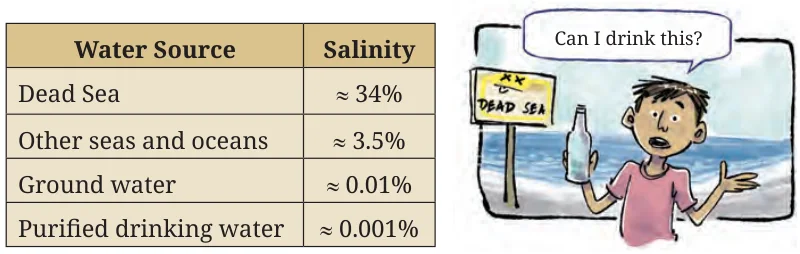

- A stationery shop owner made ₹8000 selling books, of which 30% is the profit amount, and ₹1000 selling book covers, of which 50% is the profit amount. What is the percentage of profit on the total sales?
- A white stork’s migration is tracked. The average daily distance travelled, calculated over 20 days, is 44.5 km. On the 21st day, it flew 55 km. What is the average daily distance travelled over these 21 days? Make a guess before you calculate.
- A 600 mL solution with 5% salt is mixed with a 300 mL solution with 8% sugar. What are the concentrations of salt and sugar in the mixture?
- Salt: 5%, Sugar: 8%
- Salt: 13%, Sugar: 3%
- Salt: 6%, Sugar: 6%
- Salt: 5.55%, Sugar: 8.88%
- Salt: 3.33%, Sugar: 2.67%
- Salt: 4.1%, Sugar: 7.08%
- At a panipuri (golgappa) stall, the concentration of spice in the pani (spiced water) was 8%. Many customers complained that it was too spicy. What quantity of regular water should be mixed into the 10 litres of pani so that the spice level is reduced to \(\left(\frac{3}{4}\right)^{\text{th}}\) of the original concentration?
- A physical fitness evaluation is being undertaken. The final marks are calculated by combining the marks for strength, flexibility, and agility in the ratio 4 : 5 : 6. Rashi has scored 60, 65, and 70. Keerthi has scored 55, 65, and 75 respectively.
- Find out whose total is more without calculating.
- What are their final marks?
- A restaurant collected ratings from 10 customers on a scale of 1 to 5. The resulting data is shown in the table below.
5★ 4★ 3★ 2★ 1★ Food 5 3 2 0 0 Ambience 0 4 5 1 0 Service 1 2 2 4 1 What is the average rating if the metrics are combined with the weights food : ambience : service = 6 : 5 : 4?
- The following table shows the weight data of langurs in an animal facility. Without doing any computations, can you tell whether there are more male langurs or more female langurs? Or are they equal in number?
Male langurs Female langurs All langurs Average weight 16.5 kg 13.8 kg 14.925 kg Number of langurs 60 - Which of the following expression(s) describes the given scenario?
- \(\dfrac{16.5x + 13.8y}{x + y} = 14.925\)
- \(\dfrac{16.5x + 13.8y}{60} = -14.925\)
- \(\dfrac{16.5x + 13.8y}{2} = -14.925\)
- \(\dfrac{16.5x + 13.8y}{16.5 + 13.8} = -14.925\)
- Find out how many male langurs are present.
- A female langur weighing 15.2 kg is admitted to the facility. What is the average weight of the female langurs after this?
- Two male langurs weighing 16.9 kg and 16.1 kg are released from the facility. What is the average weight of the male langurs after this?
- Now, suppose one of the male langurs lost 1 kg of weight. What is the average weight of all the male langurs after this?
- Which of the following expression(s) describes the given scenario?
- Dorjee has collected 1 litre of water from the Dead Sea! Using the information in the table, answer the following questions. A calculator can be used if necessary.

- What is the salinity of the mixture if he mixes 1 litre of water from the Dead Sea with 2 litres of purified drinking water?
- Is it possible to mix water from the Dead Sea and purified drinking water to get a mixture with the salinity of groundwater? Why/Why not? What quantity of purified drinking water should Dorjee mix with 1 litre of water from the Dead Sea to get a mixture having the salinity of groundwater?
- Is it possible to mix water from the Dead Sea and groundwater to get a mixture with the salinity of purified drinking water? Why/Why not? What quantity of groundwater should he mix with 1 litre of water from the Dead Sea to get a mixture having the salinity of purified drinking water?
Chapter 10 · How Quantities Combine Understanding Data